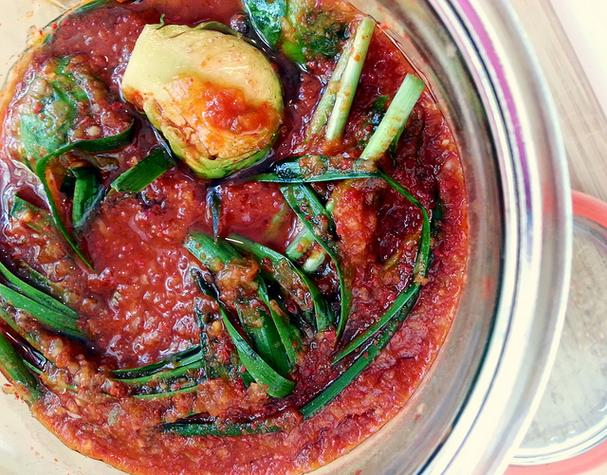

How to make your own artisanal kimchi using traditional Korean methods
By: Mia
Introduction
Possible subheading:
Bringing the Bold Flavors and Health Benefits of Kimchi into Your Home Kitchen
Kimchi is a beloved fermented vegetable dish from Korea that has gained worldwide popularity for its addictive spicy, sour, and umami taste, as well as its many health benefits. Kimchi is rich in probiotics, vitamins, fiber, and antioxidants, and has been linked to better gut health, immune system function, brain function, and cholesterol levels. Making kimchi at home is a fun and rewarding way to connect with the cultural heritage and culinary diversity of Korea, while also enjoying the freshness, quality, and customization of your own ingredients and techniques. In this guide, we will take you step by step through the process of making your own artisanal kimchi using traditional Korean methods, from selecting the right cabbage to seasoning and fermenting it to perfection. Whether you are a beginner or a seasoned fermenter, we hope to inspire you to experiment with different variations and enjoy the delicious and nutritious benefits of kimchi. So, put on your apron, roll up your sleeves, and let's start fermenting!
Ingredients
The Art of Making Authentic Kimchi: Understanding the Key Ingredients
If you've ever tasted Korean food, you've probably tried kimchi at some point. This famed condiment has become a beloved staple in many cuisines around the world, and for good reason. Its spicy, pungent bite and unbeatable flavor make it a must-have accompaniment for a variety of dishes.
But have you ever wanted to make your own? Perhaps you've been intimidated by the long list of ingredients, or maybe the complex process has deterred you. Fear not, for with a little guidance and understanding of the ingredients, you can master the art of making authentic kimchi right in your own kitchen.
The cornerstone of any good kimchi recipe is the chili pepper blend. This mixture, known in South Korea as gochugaru, brings the heat and vibrancy that is essential to kimchi's trademark flavor profile. The peppers are dried and crushed into flakes, then mixed with other spices and sometimes sugar to create a fine powder that is perfect for fermenting.
Another key player in kimchi is the cabbage. While this vegetable might seem like a simple addition, it actually serves as the foundation for the entire dish. Napa cabbage is the most commonly used type in traditional Korean kimchi, as its tender leaves and robust flavor hold up well during the fermentation process.
Other crucial ingredients include garlic, ginger, and fish sauce or shrimp paste, which add depth and complexity to the finished product. While the list of ingredients may seem imposing at first, with a bit of practice and patience, you too can become a master of the art of kimchi making.
So why not give it a try? Armed with a newfound understanding of the key ingredients, you're well on your way to creating your own unique and delicious take on this timeless dish. Keep exploring the site for more tips, tricks, and recipes to help you on your culinary journey.
Preparation
Before the tangy and flavorful kimchi can be enjoyed, it must first undergo a rigorous and time-consuming preparation process. The preparation stage of the kimchi-making process is crucial, as it affects the texture, taste, and shelf-life of the finished product. In this article, we will guide you through the necessary steps to prepare your own artisanal kimchi using traditional Korean methods.
To begin, start by selecting fresh and high-quality vegetables that will be used as the base of your kimchi. Common vegetables used include napa cabbage, daikon radish, and scallions. These vegetables must be cleaned thoroughly and sliced into the desired size for your kimchi.
Next, make the flavorful and spicy kimchi marinade. This is a crucial step, as the marinade will be responsible for the distinctive and exciting taste that kimchi is known for. Traditional recipes often use a combination of garlic, ginger, and hot peppers as the base of the marinade. However, many modern variations include additional ingredients such as tamari, fish sauce, and apple cider vinegar.
Once the marinade is made, you can start the fermentation process. This is where the magic happens- the natural bacteria in the marinade begin to break down the vegetables, creating that unforgettable tangy and sour flavor. To ferment kimchi, simply place the prepared vegetables in a large jar or ceramic crock and pour the marinade over the top. Press the vegetables down with a heavy object to ensure they are fully submerged in the marinade, then cover the container with a tight-fitting lid.
Kimchi is typically left to ferment for a few days at room temperature, after which it can be stored in the fridge for up to a month. It is essential not to open the jar during the fermentation process, as this will allow oxygen in and disrupt the fermentation process.
In conclusion, mastering the preparation stage of kimchi-making is essential for creating high-quality, flavorful, and traditional kimchi. With this guidance, you are well on your way to creating your own delicious artisanal kimchi using traditional Korean techniques.
Fermentation
Mastering the Art of Fermentation: Key to Crafting Perfect Artisanal Kimchi
Fermentation is an artist's palate that breathes life into the creation of artisanal kimchi. It is the magic ingredient that transforms ordinary vegetables into a complex and tangy culinary delight. Fermentation is a natural process that unlocks the flavor and nutritional potential of the ingredients by allowing the beneficial bacteria to thrive and multiply.
The fermentation process in kimchi making is unique and involves a series of intricate steps that must be followed correctly to preserve the flavor and health benefits of the final product. The traditional Korean method of fermentation is handed down from generation to generation and is considered a cornerstone of Korean culinary heritage.
Fermentation is a controlled process that requires careful monitoring of temperature, time, and acidity levels. It involves the mixing of raw vegetables, salt, and a paste made from Korean chili powder, garlic, ginger, and fish sauce. The mixture is then left in a container to ferment for several days or weeks, depending on the desired result.
The bacteria present in the kimchi mixture break down the sugars in the vegetables, producing lactic acid and other compounds that give kimchi its distinct flavor and aroma. The fermentation process also makes kimchi rich in probiotics, enzymes, and other beneficial microorganisms that promote gut health.
Making artisanal kimchi using traditional Korean methods is an art form that requires patience, skill, and a deep understanding of the fermentation process. It is a labor of love that pays off in the form of a delectable and healthy delicacy that can be enjoyed for months on end.
Whether you're a seasoned kimchi maker or a novice, mastering the art of fermentation is essential to crafting perfect artisanal kimchi. With the right ingredients, tools, and techniques, anyone can create a lasting masterpiece that will tantalize the taste buds and invigorate the senses. So, dive into the world of fermentation, and let your taste buds experience a burst of flavor with every bite of your homemade artisanal kimchi.
Health Benefits
of Homemade Artisan Kimchi
Kimchi has been a staple of the Korean diet for centuries, and it's no surprise why. This traditional fermented vegetable dish offers an array of health benefits, from improved digestion to a stronger immune system. But did you know that making your own artisanal kimchi can have even more benefits than buying it from the store?
First and foremost, homemade kimchi allows you to control the quality of ingredients and the fermentation process. This means you can use the freshest, most nutrient-dense vegetables, along with natural seasonings like ginger, garlic, and chili peppers, to create a powerful nutritional punch in every bite. Additionally, the lactobacillus bacteria that thrive during fermentation can help to maintain a healthy gut microbiome, reducing inflammation and promoting overall wellness.
But the benefits don't stop there. Artisanal kimchi can also help to lower cholesterol levels, thanks to its high fiber content and the presence of garlic, which has been shown to reduce blood pressure and improve cardiovascular health. And if you're looking to boost your immune system, look no further than kimchi's high concentration of vitamins A and C, as well as its probiotic content.
So why not try making your own artisanal kimchi using traditional Korean methods? It's easier than you might think, and the benefits are too numerous to ignore. With a little bit of patience and some high-quality ingredients, you'll have a delicious and healthy homemade condiment that's perfect for any meal.
Variations
of Kimchi to Try at Home
Kimchi is a staple of Korean cuisine that has become increasingly popular worldwide due to its many health benefits and diverse flavor profile. While there are many different types of kimchi, each variation is traditionally made with the same five basic ingredients: cabbage, radish, scallion, garlic and ginger. However, the beauty of kimchi is that the recipe can be easily adapted to suit individual preferences, resulting in a unique flavor profile for each batch.
If you are new to making kimchi, it’s important to start with the classic recipe and gradually experiment with adding or removing ingredients. For example, some kimchi recipes call for fish sauce, while others use salted shrimp or soy sauce to add umami flavor. You can also vary the spiciness level by adjusting the amount of gochugaru (Korean chili flakes) you use.
One of the most popular kimchi variations is the Baechu kimchi, which is made with Napa cabbage and is a great starting point for beginners. Other popular variations include the Dongchimi, which is a refreshing and light summer kimchi made with radish and water, and the Kkakdugi, which is a spicy and crunchy radish kimchi. For those who prefer a sweeter kimchi, the Nabak kimchi is a great option, as it is made with pear and is often served as a side dish alongside meat dishes.
Ultimately, the key to making great kimchi is to experiment and try different variations until you find the perfect flavor that suits your taste. With a little practice and patience, you can become a master of the art of kimchi making and impress your friends and family with your culinary skills!
Serving Suggestions
Once you've made your very own artisanal kimchi, the next step is deciding how to serve it! Luckily, there are countless ways to enjoy this flavorful fermented dish. By experimenting with different ingredients and cooking methods, you can create a variety of kimchi-based dishes that will delight your taste buds.
For a simple yet satisfying snack, try topping a bowl of hot rice with a serving of kimchi. The heat from the rice will warm up the kimchi, intensifying its complex blend of flavors. For a more substantial meal, use your kimchi as a topping for noodles, tacos, or sandwiches. Try pairing it with grilled pork belly for a classic Korean pork belly kimchi-bokkeum sandwich.
If you're feeling more adventurous, you can look up traditional Kimchi dishes such as Kimchi soup, Kimchi fried rice or even better the Kimchi Stew which comes in a variety of forms. These dishes are known in Korea for their nutrition and medicinal benefits, and have been enjoyed for centuries. They're also a great way to use up leftover kimchi that is slightly past its prime.
But don't limit yourself to using only traditional ingredients; kimchi is a versatile ingredient that can be used in a wide range of culinary creations. Try it in quiches, omelets, or even on top of pizzas. The spice and sourness of the kimchi complement the flavors of other ingredients and will add a surprising twist to any dish.
As you experiment with different serving options, remember that kimchi is a living, breathing food that can continue to ferment in the fridge. This results in a tangier, more complex flavor over time. Feel free to experiment and build on the flavors to create a unique and personalized spin on this timeless classic.
Storage
Maximizing the Shelf Life of Your Artisanal Kimchi: Essential Tips on Proper Storage
You've spent hours, if not days, perfecting your home-made artisanal kimchi. You've followed the traditional Korean methods, from fermenting the cabbage to adding the right spices and seasonings. But now comes the most critical part: storage. Without proper storage techniques, your kimchi can quickly spoil or lose its flavor, no matter how carefully you've prepared it.
In this guide, we'll discuss essential tips on how to store your artisanal kimchi effectively, from choosing the right container to finding the optimal storage conditions. We'll debunk some common myths about kimchi storage and provide science-based data to back up our advice.
Firstly, the container you use is crucial to ensure long-lasting fresh and flavorful kimchi. Glass jars with a tight-fitting lid are ideal, and we recommend avoiding plastic or metal containers because they can taint the flavor over time. Secondly, you must take care to fill the container no more than 80% full to allow room for fermentation gases to escape, preventing the jar from exploding.
Temperature is another vital factor in kimchi storage. Room temperature is fine for freshly made kimchi, but to slow down the fermentation process and maximize shelf life, it's best to store it in the fridge. As a general rule, the colder the storage temperature, the slower the bacterial activity in the kimchi, and the longer it will stay fresh.
Take note that kimchi is a living food that continues to ferment even in the fridge, albeit at a slower rate. Therefore, check on it regularly, and if you notice any signs of mold or spoilage, remove it promptly.
With these essential tips, you can confidently store your artisanal kimchi and enjoy the full range of flavors and health benefits that this Korean staple has to offer.
Tips
and Tricks for Perfecting Your Homemade Kimchi
Kimchi, a staple in traditional Korean cuisine, has surged in popularity worldwide for its tangy flavor and numerous health benefits. But what sets truly great kimchi apart from the rest? It all comes down to technique and quality of ingredients. In this guide, we'll provide you with valuable tips and tricks for perfecting your homemade kimchi using traditional Korean methods.
To start, it's important to understand the role that fermentation plays in producing delicious kimchi. The bacteria responsible for fermentation are essential in breaking down the sugars in the cabbage and transforming it into a tangy, probiotic-rich dish. To achieve optimal fermentation, it's important to choose the right type of cabbage and cut it appropriately. Napa cabbage is a popular choice for its tender leaves and delicate flavor, but regular green cabbage can also be used. Make sure to cut the cabbage into bite-sized pieces that will be easy to pack into jars.
Next, select high-quality ingredients to flavor your kimchi. Korean chili flakes, or gochugaru, are a must-have for their distinct heat and flavor. Fresh garlic and ginger, fish sauce, and salted shrimp provide additional depth of flavor. Experiment with different combinations to find your perfect blend.
Once your ingredients are prepared, it's time to begin the fermentation process. Keeping the kimchi at a consistent, cool temperature is crucial to ensuring successful fermentation. Traditionally, kimchi is buried in the ground for several months to ferment slowly. At home, you can use airtight jars and store them in a cool place like your refrigerator.
With these tips and tricks, you'll be well on your way to creating your own delicious batch of artisanal kimchi. Remember to experiment, get creative, and enjoy the process!
Conclusion
After months of perfecting your recipe and allowing your kimchi to ferment to the perfect tangy and spicy balance, it's finally time to enjoy the fruits of your labor. By following traditional Korean methods of preparing and fermenting kimchi, you've been able to create a fresh and flavorful batch full of probiotics and health benefits.
But your journey doesn't have to end here. There are countless variations and twists on this classic Korean dish that you can explore and experiment with. From adding different vegetables to trying out new spice blends, the possibilities are endless.
In addition to being a delicious and healthy addition to meals, making your own kimchi allows you to connect with Korean culture and tradition. You've learned about the importance of using the right ingredients, the right ratios of salt and spices, and the patience required for the fermentation process.
As you share your homemade kimchi with friends and family, don't hesitate to spread the knowledge and passion you've gained along the way. Encourage others to explore the world of fermentation and traditional cooking methods, and don't forget to continue learning and refining your own techniques.
In conclusion, making your own artisanal kimchi is a rewarding and fulfilling experience that connects you to Korean culture and tradition. With patience, experimentation, and a willingness to learn, you'll be able to create delicious and healthy batches that you can enjoy and share for years to come.